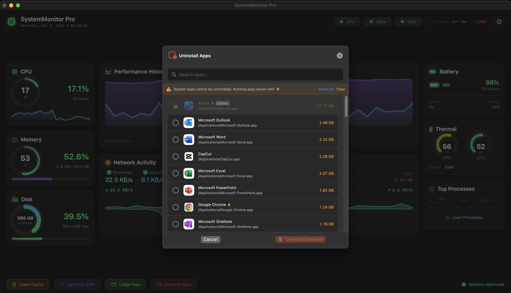

Screenshots

Main dashboard with real-time metrics

System monitoring and tools
A lightweight macOS system monitor showing CPU, memory, disk, and network usage in real-time
Real-time CPU usage tracking with per-core breakdown and temperature estimates
Monitor RAM consumption with detailed breakdown of active, wired, and compressed memory
Track storage usage across all mounted volumes with visual indicators
Live upload and download speed monitoring with historical data
Clean browser caches, app caches, Xcode data, and temporary files safely
Remove applications completely including all associated files and preferences
Main dashboard with real-time metrics
System monitoring and tools
Latest stable release
or clone the repository:
git clone https://github.com/sulimanapps/SystemMonitor.git
Download the latest .zip file from the releases page
Double-click the zip file to extract SystemMonitor Pro.app
Drag the app to your Applications folder
Open the app - it will appear in your menu bar